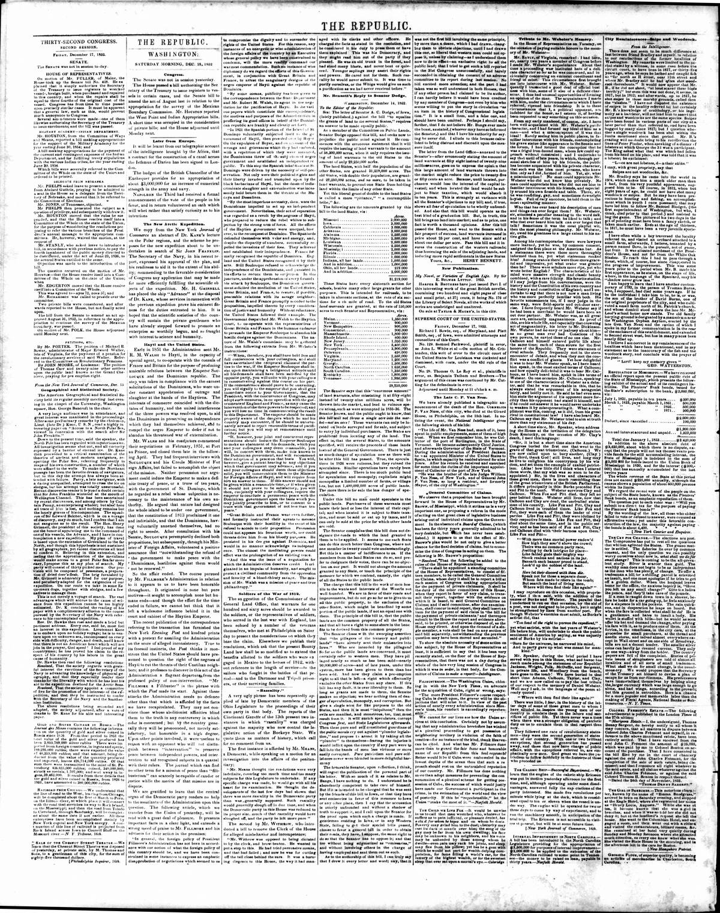

1., ,i.. ??j ous paper which constitute lliir coi i ospondeucf
https://www.loc.gov/resource/sn82014434/1852-12-18/ed-1/?sp=2

See the original pageVer la página original
“By some means, publicity has been given to the correspondence between the State Department and Mr. Robert M. Walsh, its agent in the negotiation for the pacification of Hayti. In the various papers which constitute this correspondence, the motives and purposes of the Administration in proffering its good offices in behalf of the Dominican republic are frankly and clearly set forth.
“In 1821 the Spanish portion of the Island of St. Domingo voluntarily subjected itself to the government of Hayti, then presided over by Boyer. On the expulsion of Boyer, and on account of the wrongs and grievances which they had endured, with a repetition of which they were menaced, the Dominicans threw off the subjection of negro government and established an independent republic. To this step the Spanish inhabitants of St. Domingo were driven by the necessity of self-preservation. Not only were their political rights and their liberty invaded and trampled upon by the black barbarians of Hayti, but the doom of indiscriminate slaughter and extermination was incessantly held before them in the threats of the Macaya and Dessalines.
“By the most imperious necessity, then, were the Dominicans impelled to set up an independent government. Nevertheless, their act of separation was regarded as a revolt by the negroes of Hayti, who prepared to reduce the rebel whites to subjection by the strong arm of force. All the efforts of the Haytien government were unequal, how ever, to the reconquest of Dominico. The Spaniards defended themselves with valor and energy, and, despite the disparity of numbers, successfully repelled the invasions of their foes. They achieved and established their independence. France formally recognised the republic of Dominica. England and the United States recognised it by their acts. Still Soulouque refused to acknowledge the independence of the Dominicans, and persisted in his efforts to reduce them to subjection. In this juncture, under the apprehension of a very formidable attack by Soulouque, the Dominican government solicited the mediation of the United States,
How to cite this articleCómo citar este artículo
The Republic. (1852). Washington [D.C.], December 18, 185218 de diciembre de 1852. DR in the American PressRD en la Prensa Norteamericana. Library of Congress, Chronicling America: https://www.loc.gov/resource/sn82014434/1852-12-18/ed-1/?sp=2
ReferencesReferencias
Library of Congress, Chronicling America: The Republic, December 18, 185218 de diciembre de 1852.
Send an observationEnviar una observación
Does this article connect with your family, your town, or something you know? Did we get something wrong? Write to us. Observations go to the editor's inbox and are read by a person.¿Este artículo conecta con su familia, su pueblo o algo que usted conoce? ¿Nos equivocamos en algo? Escríbanos. Las observaciones llegan al buzón del editor y las lee una persona.
Send observationEnviar observación